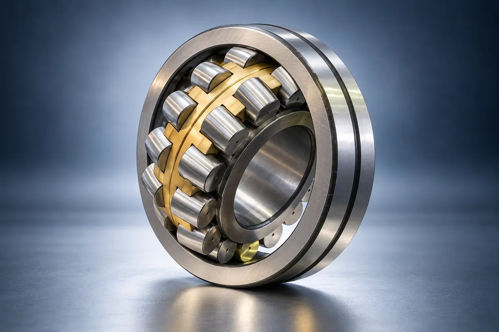

INDUSTRY APPLICATION
Bearings for Conveyors & Material Handling.
Conveyors and material handling systems move bulk or packaged goods through production, storage and dispatch. Idlers, pulleys, rollers and drive assemblies have different loads, speeds and contamination exposure. Spherical roller bearings and ball bearing families are commonly used in this broad equipment group, depending on the design and duty. The correct component depends on the position, shaft size, load, speed, seals and maintenance plan. Share the machine or conveyor details and the complete existing bearing number for review. Load direction, shaft dimensions and operating environment vary between conveyor positions.
Ask about your application ↗
PRODUCT RANGE
Bearings for this industry
Product associations below are commonly used in these applications; they are not machine-specific recommendations. Confirm the exact specification with our team.

Conveyors and EOT cranes
For conveyor systems, EOT cranes and material handling equipment, the supplied application notes describe continuous operation, heavy radial and shock loads, and dusty environments. Listed benefits include high load capacity, reliable rotation, reduced downtime and long service life.
Model numbers to enquire about
A SIMPLE PROCESS
How to order
Send your requirement
Share the bearing number, size or application.
We confirm
We check the exact specification with you.
We arrange supply
We confirm the next steps for your requirement.
COMMON QUESTIONS
Enquiries for Conveyors & Material Handling
Which bearing families are commonly used in Conveyors & Material Handling?
The page lists product families commonly considered for Conveyors & Material Handling. The required design depends on the equipment position and operating conditions.
What information should I send for a product enquiry?
Send the complete bearing number or dimensions, the machine application, required quantity and destination country.
Can Premach confirm the exact fit?
Share a drawing or existing part reference so the specification can be checked. Final fit must be confirmed for the specific equipment.
Need bearings for Conveyors & Material Handling?
Send us the machine and bearing details.
Continue on WhatsApp ↗